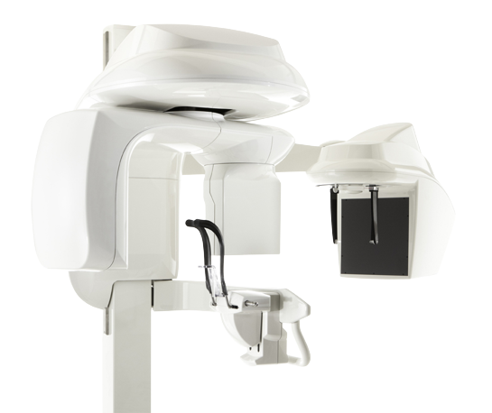

Welcome to
Ivory 32 Maxillofacial Imaging and Diagnostics.

We are the first state of the art dedicated maxillofacial diagnostic centre for 2d and 3d imaging of the maxillofacial region in Western UP. We aim to provide advanced diagnostic information in UP to better aid in the patient care and management. .

B.D.S, M.D.S(Oral medicine and radiology), F.A.G.E
She has completed her senior residency from Safdarjang Hospital, New delhi. She is a consultant oral medicine and radiology specialist for the past 9 years. She specializes in the management of red and white lesions and ulcerative conditions of the oral cavity. She is trained in the field of tobacco cessation. Her keen areas of interest include management of temporomandibular joint disorders,myofascial pain dysfunction syndromes and Chronic pain management including neuralgia. She has been trained in the advanced radiology for head and neck diseases especially the application of Cone Beam CT. She has contributions in the course textbook of Diagnostic Oral Medicine and mcq books for Forensic Odontology. Apart from her own specialization she also has a fellowship in aesthetic dentistry.
BDS, MDS(Consultant Oral and maxillofacial surgeon), F.A.G.E
Over the past 9 years as an oral and maxillofacial surgeon , has worked enthusiastically and caringly in managing patients requiring wisdom tooth removal , impacted tooth surgeries, managing cysts and rumours of the jaws, prosthetic rehabilitation of jaws requiring advanced surgeries for dental implants. With an impetus on prompt , efficient and quality care for patients with Dentofacial facial trauma he has trained in multiple national and international facial fracture workshops and takes keen interest in their management. He has special interest in managing patients with dento-facial deformities including cleft lip and palate and aesthetic surgeries of face and has worked in plastic and maxillofacial surgery units for the same. He has been working with Botox and fillers for facial aesthetic rejuvenation. His research on use of collagen sheets in management of oral sub mucous fibrosis patients has given excellent outcomes for patients with reduced mouth opening. He has also worked extensively on temporomandibular surgeries and performed distraction osteogenesis for retrognathic /micrognathic jaws. He heads the Maxillofacial Surgery Department in Apex Hospital Delhi road Moradabad.
M.B.B.S, D.C.P, MD
Dr. Pramila defined the norm 40 years ago to single handedly establish a pathology and micro biology centre. The centre is well known in Moradabad for its accurate reports and scientific based pathological opinion. Her histopathologic examination of gynaecological specimens and PAP smears and cultures are appreciated by various practioners here. She has avid interest in the subject and great command over her knowledge.

M.B.B.S M.D
Dr. Gupta graduated and postgraduated from the prestigious GSVM college Kanpur. There after he has persued his interest in cardiology and diabetes. He is a well known practitioner in Moradabad for the past 40 years. He is associated with numerous insurance companies as their medical examiner. He has numerous achievements to his credit. His avid interest in contiung education takes him to numerous conferences and talks each year.A 23, Gandhi nagar,
Moradabad, UP,
244001
Ivory32mid@gmail.com
7906909331